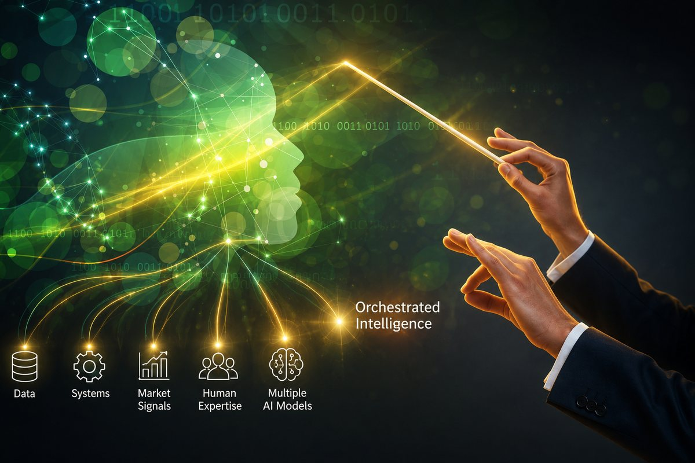

Why the Future of Industrial AI Isn't One Model, It's Orchestrated Intelligence
Why industrial organizations are moving beyond AI tools toward orchestrated, explainable, and human-in-the-loop operational intelligence.
Over the past two years, organizations have rushed to adopt artificial intelligence. Generative AI tools, copilots, and specialized models are now appearing across nearly every business function. Manufacturing teams are experimenting with predictive maintenance. Procurement organizations are deploying AI for sourcing and contract analysis. Operations teams are leveraging AI to identify inefficiencies and optimize production.
Yet despite this acceleration, many organizations are encountering a new challenge. AI is producing more information than ever before, but very little of it is resulting in orchestrated action.
The issue is not access to AI. The issue is that most enterprises are attempting to solve complex operational problems with isolated models and disconnected tools. For industrial organizations, this creates a new intelligence gap.
One AI Model Cannot Solve Enterprise Complexity
Decisions are influenced by market conditions, equipment performance, supply chain constraints, production schedules, financial objectives, regulatory requirements, and institutional knowledge spread across dozens of systems and teams.
No single AI model excels at every task. Some models are exceptional at reasoning and analysis. Others are better at retrieval and search. Some are optimized for summarization, while others provide superior domain-specific understanding.
Relying on a single model introduces limitations:
- Inconsistent output quality
- Higher operational risk
- Vendor dependency
- Reduced flexibility as technology evolves
- Inability to optimize for different business scenarios
The future of enterprise AI will not belong to one model. It will belong to organizations that can intelligently orchestrate many models.
TwoSuns.ai transforms fragmented data, AI, and human expertise into orchestrated decisions, explainable execution, and measurable business outcomes.
From AI Tools to Enterprise Intelligence
This is where TwoSuns.ai takes a fundamentally different approach. TwoSuns does not compete with foundation models such as ChatGPT, Claude, Gemini, or Perplexity. Instead, it acts as the intelligence and orchestration layer that sits above them.
The platform dynamically applies the right model to the right problem while maintaining continuity across workflows, systems, and teams. More importantly, it connects AI to the realities of enterprise operations.
A production issue in a plant is not simply a prediction. It may impact procurement decisions, inventory requirements, customer commitments, financial forecasts, maintenance schedules, and executive priorities.
Enterprise decisions are interconnected. AI must be as well.
Intelligence Without Context Creates Noise
Many organizations have discovered that deploying AI is relatively straightforward. Operationalizing AI is not.
Most standalone AI tools lack:
- Persistent organizational context
- Integration with enterprise systems
- Governance and security controls
- Explainability and auditability
- Cross-functional orchestration
As a result, organizations often generate more insights but achieve little improvement in execution. The challenge facing industrial companies today is no longer finding information. The challenge is transforming information into aligned decisions and orchestrated action.
Building an Operational Intelligence Layer
TwoSuns.ai was designed to operate as an enterprise intelligence layer. It continuously connects:
- Internal operational and financial systems
- External market, geopolitical, and regulatory signals
- Institutional knowledge and business context
- Human expertise and decision workflows
- Multiple AI models and analytical capabilities
The result is not another dashboard or chatbot. It is an operational intelligence environment where signals become recommendations, recommendations become decisions, and decisions become orchestrated execution.
For operations leaders, this means faster response to disruptions. For technology leaders, it means a governed and scalable AI architecture. For plant operators, it means fewer disconnected systems and greater operational visibility.
Why Explainability Matters More Than Ever
Industrial organizations operate in high-consequence environments. Production changes, maintenance decisions, procurement actions, and capital investments all require accountability.
This is why TwoSuns was built on the principle of Glassbox AI. Every recommendation can be traced back to the data, assumptions, and reasoning that produced it.
The next competitive advantage will not come from having access to AI. It will come from orchestrating intelligence across people, systems, and decisions.
Every decision becomes:
- Explainable
- Auditable
- Repeatable
- Governed
Trust is becoming one of the most valuable assets in enterprise AI. Organizations that cannot explain how decisions are being made will struggle to scale AI across mission-critical operations.
Human-in-the-Loop Is a Strategic Advantage
Artificial intelligence can identify patterns, predict outcomes, and generate recommendations, but industrial operations still depend on human judgment. Experienced operators understand the nuances, constraints, and business context that no model can fully capture.
That is why TwoSuns.ai places people at the center of the intelligence process. The platform augments human expertise by delivering explainable insights and recommendations while keeping accountability and decision-making in the hands of those responsible for execution.
The organizations that achieve the greatest value from AI will not replace human expertise, they will combine machine intelligence with human experience to make faster, more confident, and better-informed decisions.
The Strategic Advantage of Orchestrated Intelligence
The industrial organizations that will lead over the next decade will not necessarily be the ones that adopted AI first or implemented a single model faster than their competitors. Their advantage will come from building an enterprise capability that can continuously adapt to an evolving AI landscape while maintaining governance, trust, and operational alignment.
AI models will continue to improve, new providers will emerge, and technologies that seem revolutionary today will eventually become commoditized. In this environment, competitive advantage will not be determined by the model itself, but by an organization's ability to integrate intelligence from multiple sources, apply it within a business context, and translate it into orchestrated action.
This is why the intelligence and orchestration layer is becoming a strategic necessity. Organizations need a persistent capability that connects data, systems, people, and AI models into a unified decision-making environment that can evolve without disrupting operations.
TwoSuns.ai was built to provide that foundation. By separating the intelligence layer from the underlying AI models, organizations gain the flexibility to adopt new technologies as they emerge while preserving continuity, governance, and institutional knowledge. More importantly, they gain the ability to move beyond isolated insights and toward orchestrated execution across the enterprise.
The future of enterprise AI is not about having access to more models. It is about creating an intelligent operating environment where signals become decisions, decisions become actions, and organizations can execute with greater speed, clarity, and confidence.
The companies that outperform in the age of AI will not be those with the most data or the most models. They will be the organizations that can orchestrate intelligence, align people and systems, and turn insight into execution at enterprise scale.
Frequently Asked Questions
Industrial AI orchestration brings multiple AI models, enterprise systems, data sources, and human expertise together into one governed decision-making environment. Signals become recommendations, recommendations become decisions, and decisions become execution. It treats AI as an operating layer, not a single tool.
No single model excels at every task, and enterprise decisions depend on market conditions, equipment performance, supply chains, finance, regulation, and institutional knowledge spread across many systems. Relying on one model creates inconsistent output, vendor dependency, and reduced flexibility as the technology evolves.
An orchestration layer applies the right model to the right problem, routing tasks such as reasoning, retrieval, summarization, and domain analysis to the model best suited for each, while maintaining continuity, context, and governance across workflows.
Human-in-the-loop AI keeps people at the center of the decision process. AI delivers explainable insights and recommendations, but accountability and the final decision stay with the operators and leaders responsible for execution, combining machine intelligence with human experience.
An enterprise intelligence layer sits above your existing systems and AI models, continuously connecting operational, financial, market, and human-knowledge signals into orchestrated, explainable execution, without replacing the underlying infrastructure.